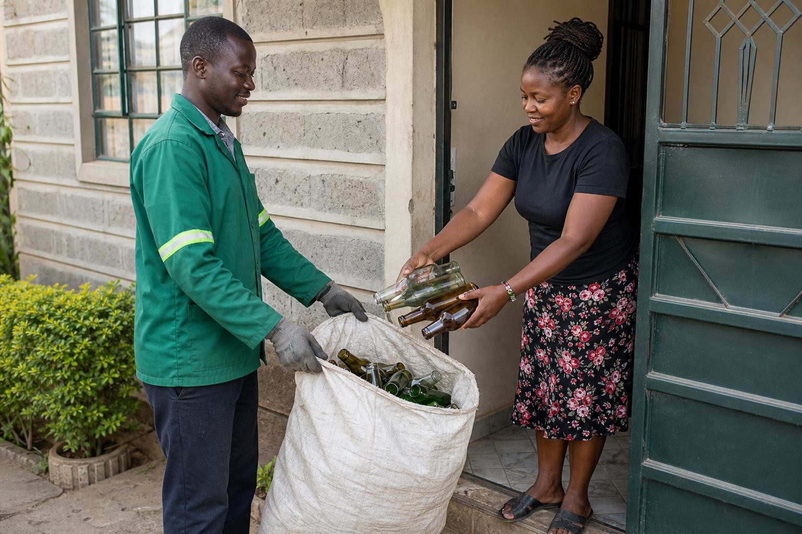
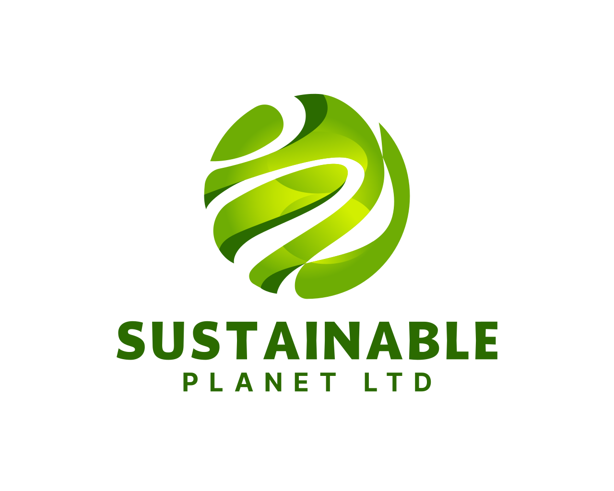
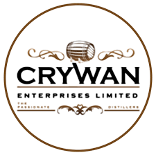
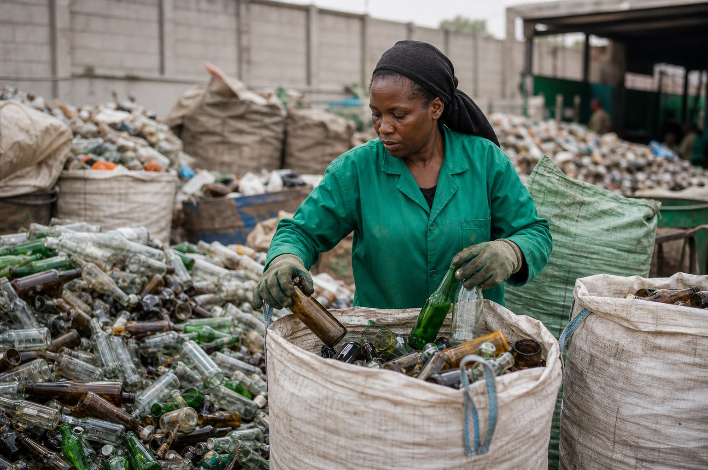
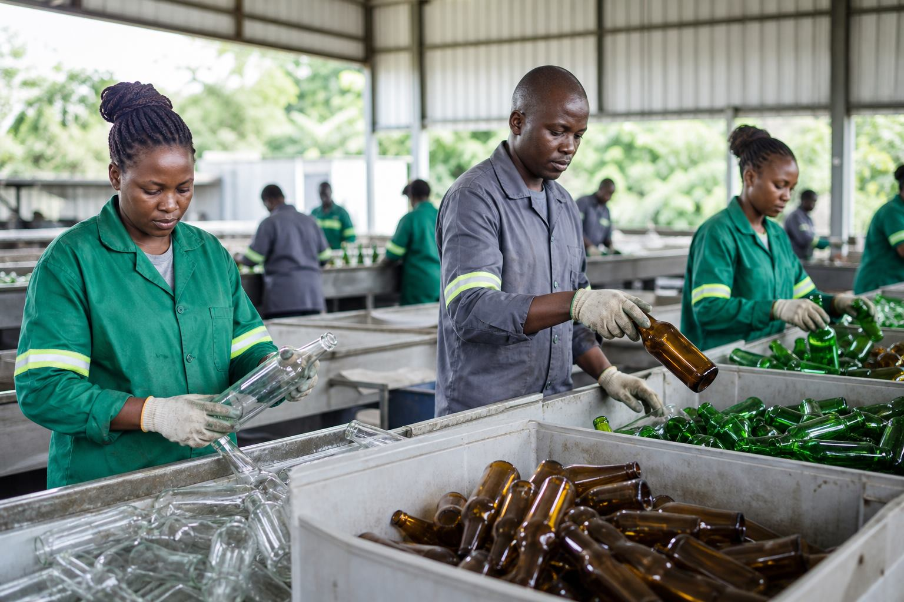

Collect
Aggregators consolidate bottles from businesses and community points.
Glass recycling collections across Kenya
OCUVIDA collects glass bottles from aggregators, sorts them by quality and color, and moves the material into recycling and reuse channels from our Kariobangi operations base.
Overview
OCUVIDA focuses on one material stream: glass. We help recover bottles from hotels, restaurants, bars, retailers, events, households, and community collection points, then prepare them for responsible recycling, reuse, and upcycling partners.


Built for glass
From the receiving area in Kariobangi Light Industries, collected bottles are handled in batches so aggregators know where their material goes and partners receive cleaner, better-prepared glass.
How it works
Aggregators consolidate bottles from businesses and community points.
Glass is separated by color, condition, and reuse potential.
Material is cleaned and prepared for recycling streams and partners.
Reusable bottles and upcycled glass return value to local communities.

Why aggregators work with us
Aggregator work depends on trust: clear contacts, known location, predictable handling, and a team that understands glass. OCUVIDA keeps the process focused so collected bottles do not get lost inside mixed waste streams.
View servicesPartners

Sustainable Planet Ltd
Crywan Enterprises Limited

Coverage
Our receiving location is on Harmony Road, off Outering Road, Kariobangi Light Industries. We also coordinate aggregator pickups in Nairobi, Central Kenya, Eastern Kenya, Western, and Rift Valley based on county, volume, and route availability.
Location: Harmony Road, off Outering Road, Kariobangi Light Industries
Open in Google MapsStart a collection
Use the form for aggregator sign-ups, pickup scheduling, and partnership enquiries. Share your county, estimated volume, and preferred contact method.